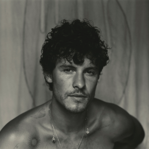

Couldn't load the recordings just now. Refresh in a minute.
No songs here yet.

I'm learning 11 songs from Shawn Mendes' 2024 album Shawn. Open a song and press play to hear where it's at.
Couldn't load the recordings just now. Refresh in a minute.
No songs here yet.